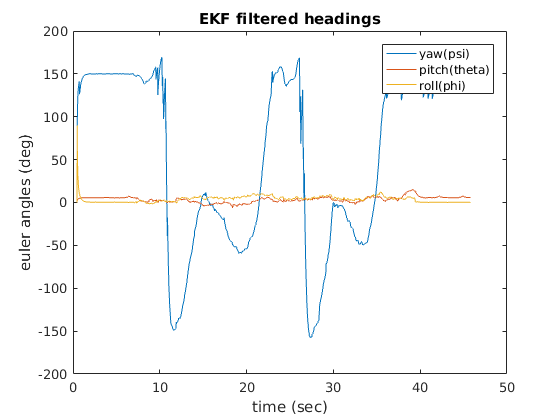
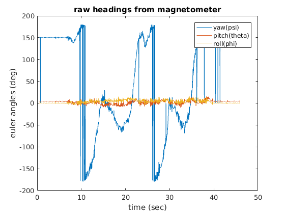

Homework 3 extra credit
Bailey Waterman and Keshuai Xu We only have it in matlab. The data is collected with the arduino kit. It was collected when we walked in a straight hall way back and forth. The data collection is as fast as possible (approx 50 Hz). The time step is not exactly a constant. The state model does not handle angle wrapping, which caused some weird arifacts in the output.
The EKF algorithm is stolen from Wikipedia.
function [ x_estimate, P_estimate ] = kalman_sensor_fusion(x_prev, u_prev, P_prev, f, F, h, H, z, Q, R) x_predict = f(x_prev, u_prev); P_predict = F(x_prev, u_prev) * P_prev * F(x_prev, u_prev)' + Q; y = z - h(x_predict); S = H(x_predict) * P_predict * H(x_predict)' + R; K = P_predict * H(x_predict)' / S; x_estimate = x_predict + K * y; P_estimate = (eye(size(x_prev,1)) - K * H(x_predict)) * P_predict; end
clear variables syms gyro_x gyro_y gyro_z psi theta phi psid thetad phid dt real
H_321 = @(theta, phi) [-sin(theta) 0 1;
sin(phi)*cos(theta) cos(phi) 0;
cos(phi)*cos(theta) -sin(phi) 0];
x = [psi theta phi]'; % state
u = [gyro_x gyro_y gyro_z dt]';
f_expr = x + (H_321(theta, phi) \ u(1:3, :)) * u(4, :); % state model
h_expr = eye(3) * x; % observation model
F_expr = jacobian(f_expr, x); % linearized state model
H_expr = jacobian(h_expr, x); % linearized observation model
close all n_states = 3; n_measurements = 3; x_prev = [0 0 pi]'; u_prev = [0 0 0 0.02]'; P_prev = eye(n_states); Q = eye(n_states) * 1e-2; R = eye(n_measurements) * 1e-0; data = csvread('hw3q7_2.csv',1,0); time_stamp = data(:, 1)'; gyro_readings = data(:, 5:7)'; heading = deg2rad(data(:, 13:-1:11)'); dt = [0.02, diff(time_stamp)]; z_traj = heading; u_traj = [gyro_readings; dt]; f_fun = matlabFunction(f_expr, 'Vars', {x,u}); F_fun = matlabFunction(F_expr, 'Vars', {x,u}); h_fun = matlabFunction(h_expr, 'Vars', {x}); H_fun = matlabFunction(H_expr, 'Vars', {x}); x_traj = zeros(n_states, size(z_traj,2)); for t = 2:size(z_traj,2) [ x_estimate, P_estimate ] = kalman_sensor_fusion(x_prev, u_traj(:, t-1), P_prev, f_fun, F_fun, h_fun, H_fun, z_traj(:, t), Q, R); x_traj(:, t) = x_estimate; x_prev = x_estimate; P_prev = P_estimate; end figure() plot(time_stamp, rad2deg(x_traj(1:3,:))) xlabel('time (sec)'); ylabel ('euler angles (deg)'); title('EKF filtered headings'); legend ('yaw(psi)','pitch(theta)','roll(phi)') figure() plot(time_stamp, rad2deg(heading)) xlabel('time (sec)'); ylabel ('euler angles (deg)'); title('raw headings from magnetometer'); legend ('yaw(psi)','pitch(theta)','roll(phi)') 